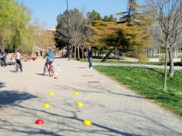

Nivel II. Habilidad
Nivel medio. Habilidad y afianzamiento sobre la bicicleta
Has dado tus primeras pedaladas o hace muchos años que lo dejaste… ahora puedes mejorar tu habilidad para retomar la bicicleta.
Practicaremos las habilidades y aprenderemos a utilizar la bicicleta de manera fácil y segura.
Ideal para después del curso de iniciación (4 sesiones de 2 horas).
Destinado a…
- Personas que alguna vez han montado en bicicleta y quieren recordar y aumentar su habilidad.
- Personas que han acabado el nivel iniciación y quieren seguir progresando.
Objetivos:
- Coger soltura encima de la bici.
- Subir la altura del sillín.
- Poder mirar a ambos lados y hacia atrás.
- Poder soltar del manillar tanto la mano izquierda como la derecha, para indicar giros.
- Precisión en la frenada.
- Hacer giros complejos y pasos estrechos.
- Funcionamiento de los cambios delantero y trasero.
- Ponerse de pie sobre la bici.
- Hacer pequeños recorridos por caminos y/o carriles bici.